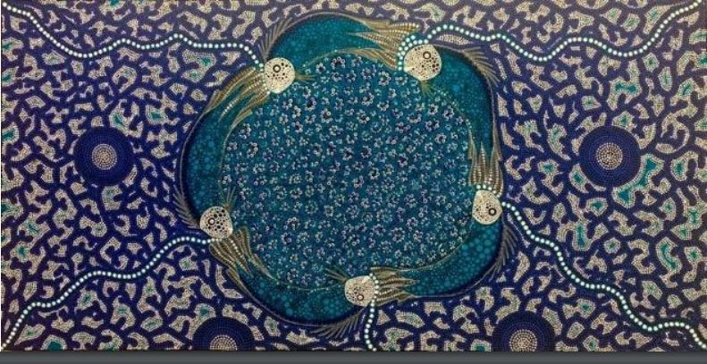

| Oorndagarranha ngadyidningi gabmarra warna gardindya 🔊 | In the Lord I’ll be ever thankful |
| Oorndagarranha ngadyidningi ngaldi yalda ngayi 🔊 | In the Lord I will rejoice |
| Oorndagarraru nhoornoo nhagooga gooda wayigoomaga 🔊 | Look to God, do not be afraid |
| Nhoorrali garlarri garngaga Oorndagarranha yabirdi 🔊 | Lift up your voices the Lord is near |
The interlinear gloss looks like this:
| Oorndagarra-nha | ngadyi-dningi | gabmarra | warna gardindya | Lord-IND | I-NOM-COM | always | glad |
| Oorndagarra-nha | ngadyi-dningi | ngaldi yalda ngayi | ||
| Lord-IND | I-NOM-COM | rejoice | ||
| Oorndagarra-ru | nhoornoo | nhagoo-ga | gooda | wayigooma-ga |
| Lord-PURP | you | see-IMP | not | fear-IMP |
| Nhoorrali | garla-rri | garnga-ga | Oorndagarra-nha | yabirdi |
| You-PL | voice-PL | lift.up-IMP | God-IND | near |
